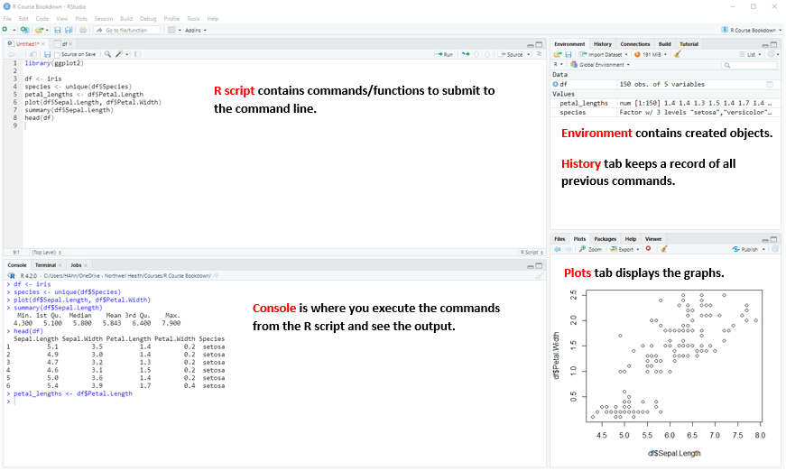

Introduction to Statistical Computing: R
January 11, 2023
Before getting started…
Why R?
- R is a FREE, open-source, statistical software
- R is one of the widely used programming languages
- A go-to language for Statistics
- Conventionally, R was mostly used in academia but with the emergence of Data Science, the need for R in industries became evident. !
What is RStudio?
- Free, open-source IDE (integrated development environtment) for R
- User-friendly
- Provided by Posit: https://posit.co
- Note: RStudio has been rebranded to Posit and launched their website in October 2022.
- The rebranding allowed users of the open source software for R, Python, and other coding languages.
- They have also provided more machine and deep learning packages for users!
- The rebranding allowed users of the open source software for R, Python, and other coding languages.
- Note: RStudio has been rebranded to Posit and launched their website in October 2022.
The following image below demonstrates what RStudio is consisted of:

- RStudio has recently rebranded itself as Posit.
- They advertised as providing a multi-lingual data science, open-source and commercial software for R, Python, and beyond.
- Because of this rebranding, we will be using the products that they have just recently released.
Later on in the series, it is highly recommended to install both R and RStudio onto the local device.